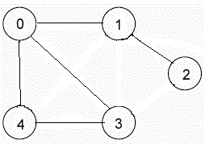

Algorithm

Adjacency List:
An array of linked lists is used. Size of the array is equal to number of vertices. Let the array be array[]. An entry array[i] represents the linked list of vertices adjacent to the ith vertex. This representation can also be used to represent a weighted graph. The weights of edges can be stored in nodes of linked lists.
Following is adjacency list representation of the above graph.
0->1->3->4
1->2->0
2->1
3->0->4
4->0>3
Source Code
#include <iostream >
using namespace std;
struct node
{
int x;
node *next1;
};
//function to create edges of an undirected graph using adjacency list
void addedge(node a[],int src,int dest)
{
node *ptr=new node();
node *head=a[src].next1;
ptr->x=dest;
a[src].next1=ptr;
ptr->next1=head;
node *ptr2=new node();
node *head1=a[dest].next1;
ptr2->x=src;
a[dest].next1=ptr2;
ptr2->next1=head1;
}
//function to print the list
void print(node a[],int v)
{
for(int i=0;i<v;i++)
{
cout<<a[i].x<<"\t";
node *ptr1=a[i].next1;
while(ptr1!=NULL)
{
cout<<"-"<<"\t"<<ptr1->x<<"\t";
ptr1=ptr1->next1;
}
cout<<"\n";
}
}
//driver program to run the above functions
int main()
{
int v;
cout<<"enter no. of vertices";
cin>>v;
//here take v according to the vertices given below.It is 5 here
node graph[v];
for(int i=0;i<v;i++)
{
graph[i].x=i;
graph[i].next1=NULL;
}
addedge(graph,0,1);
addedge(graph,0,3);
addedge(graph,0,4);
addedge(graph,1,2);
addedge(graph,2,3);
addedge(graph,3,4);
print(graph,v);
return 0;
}